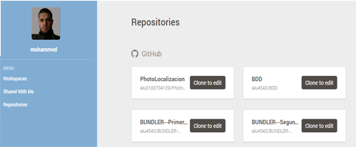
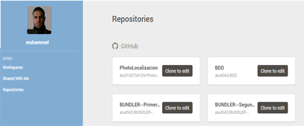

entra a :http://mail.ull.edu.es
una vez allí date de alta en g+ (si no lo has hecho) siguiendo el enlace en +me o +yo en la parte superior derecha
Si estás en Windows sigue las instrucciones en GitHub para Windows : https://nodejs.org/en/

Si utilizas linux o mac instala via apt-get
$ sudo apt-get install nodejs[Opcional] y recomendado instalar complementos nativos con npm vamos a necesitar instalar las herramientas para compilar:
$ sudo apt-get install build-essentialComprueba que npm funciona
Desde la consola comprobamos si la utilidad de la linea de comandos npm funciona.
Para instalar express tenemos que tener el npm iniciado.
$ mkdir myapp
$ cd myapp
$ npm init
$ npm install express --saveopción --save guarda dependencia en package.json
$ npm install -g expressla opcion -g para la instalación global

Si estás en Windows sigue las instrucciones en GitHub para Windows
https://git-for-windows.github.io
Descarga e instala el fichero : Git-2.6.0-64-bit.exe


Ya tenemos una cuenta publica abierta y esta en el siguiente enlace:

Desde el siguiente enlace se puede Descargar y instalar GitHub Para Windows Desktop.


* Desde el siguiente enlace se puede Descargar y instalar atom Para Windows Desktop.
Ya tenemos el atom instalado!

Abre una cuenta en c9.io (cloud9).
Vincula tu cuenta de GitHub con c9.
 

Markdown es un lenguaje de marcado ligero creado por John Gruber que trata de conseguir la máxima legibilidad y facilidad de publicación tanto en sus forma de entrada como de salida. Inspirándose en muchas convenciones existentes para marcar mensajes de correo electrónico usando texto plano. Markdown convierte el texto marcado en documentos XHTML utlizando html2text creado por Aaron Swartz. Markdown fue implementado originariamente en Perl por Gruber, pero desde entonces ha sido traducido a multitud de lenguajes de programación, incluyendo PHP, Python, Ruby, Java y Common Lisp.

Saltos de línea: Los saltos de línea se generan cuando se encuentran dos espacios juntos
"Quien fue a sevilla,
perdió su silla"Encabezados: Los encabezados se generan cuando se encuentra una almohadilla antes de texto
# Encabezado h1
## Encabezado h2
### Encabezado h3
...Citas: Para citar solo es necesario escribir una cuña antes del texto
> La vida es muy corta para aprender Alemán. -Tad MarburgTexto con énfasis: Agregar un asterisco para cursiva y dos para negrita
*énfasis* (cursiva)
**énfasis fuerte** (negrita)
```
>Código: Se utiliza el acento grave para identificar código
`Código`
```
Código en
varias líneas
```
>Listas:
Enlaces:
[Texto del enlace aquí](URL "Título del enlace")
```
>Imágenes:
```
https://github.com/jgm/pandoc/releases/tag/1.15.0.6

http://pandoc.org/getting-started.html/
To convert it to HTML, use this command:
$ pandoc test1.md -f markdown -t html -s -o test1.htmlTo create a LaTeX document, you just need to change the command slightly:
$ pandoc test1.md -f markdown -t latex -s -o test1.texOR
$ pandoc test1.md -s -o test1.texif you want to create a PDF, you’ll need to have LaTeX installed. (See MacTeX on OS X, MiKTeX on Windows, or install the texlive package in linux.) Then do
$ pandoc test1.md -s -o test1.pdf